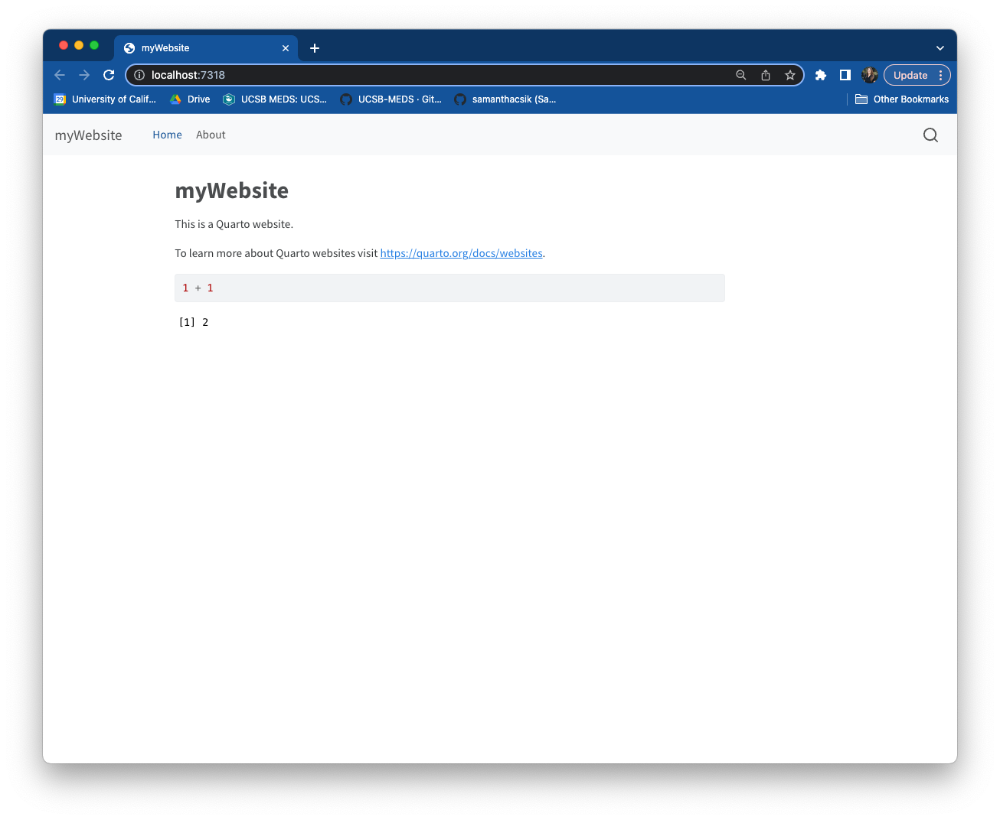
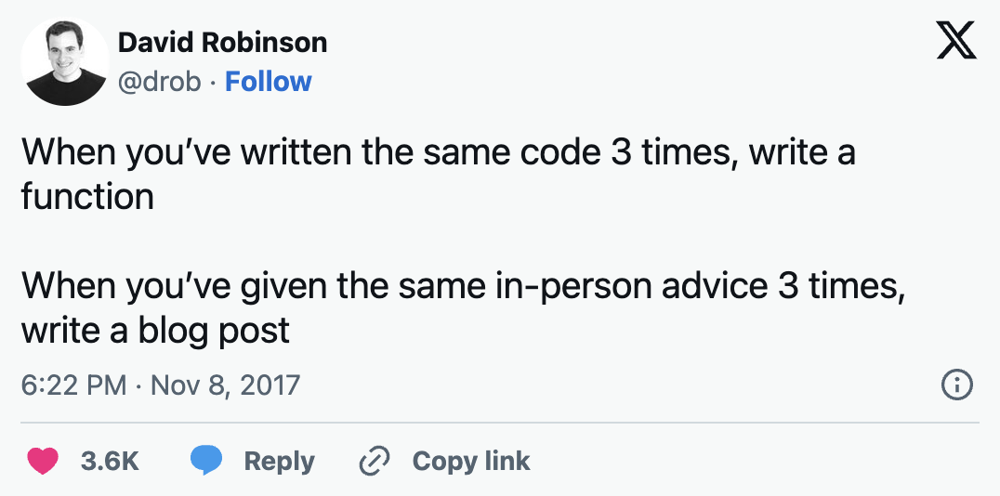
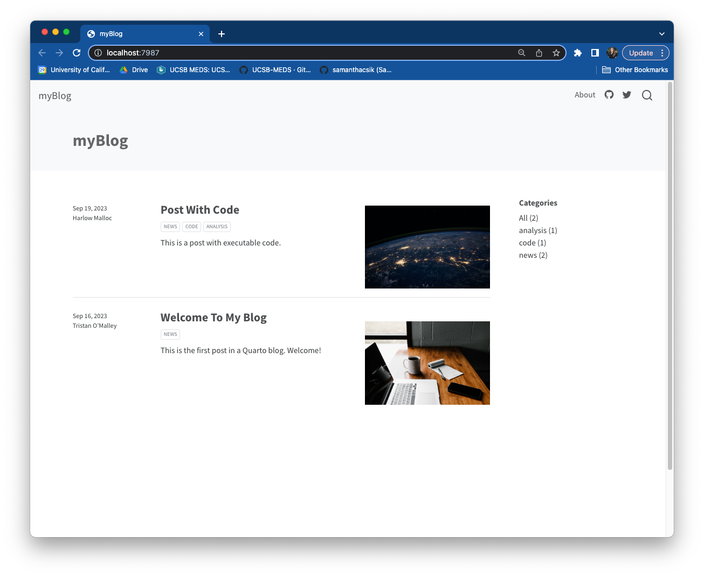
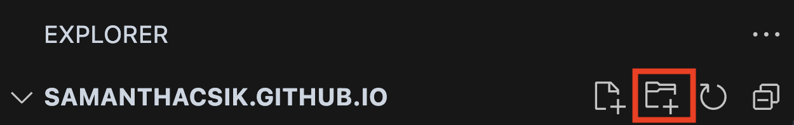
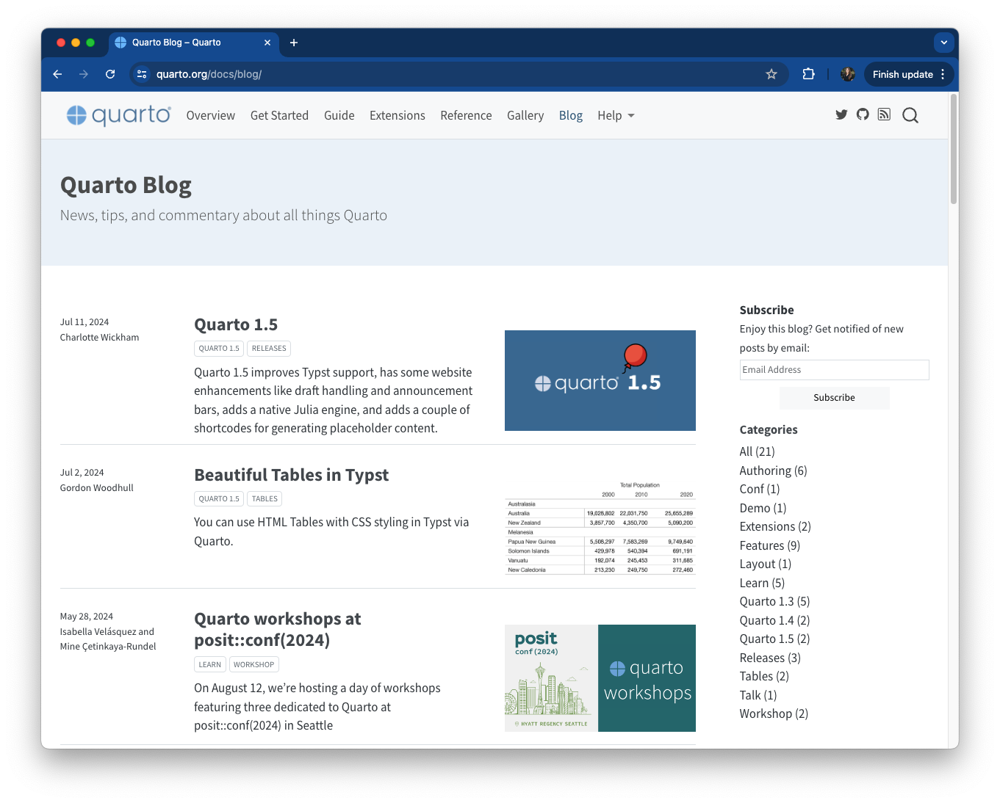
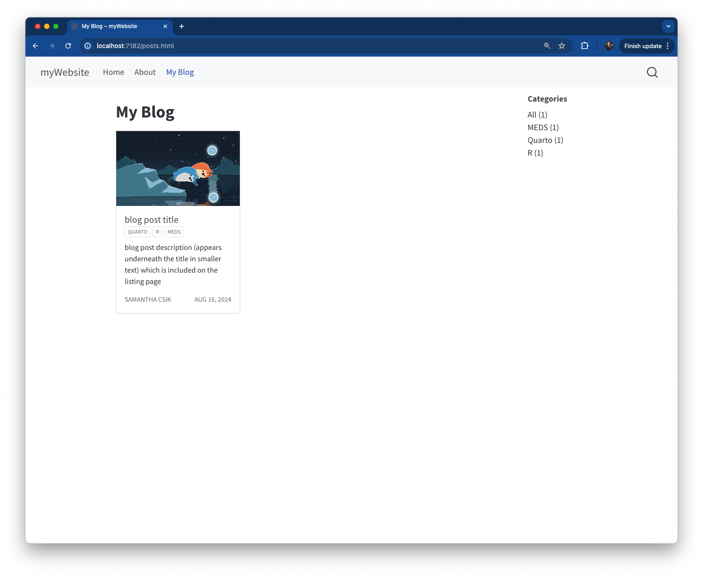
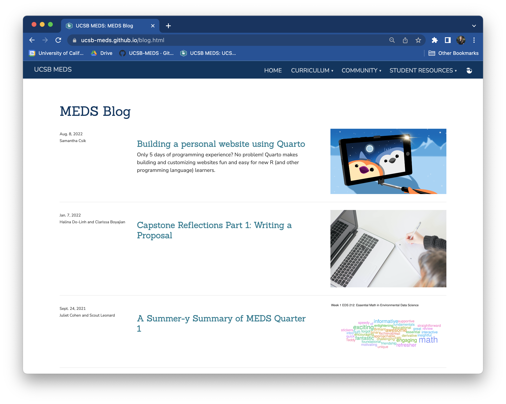
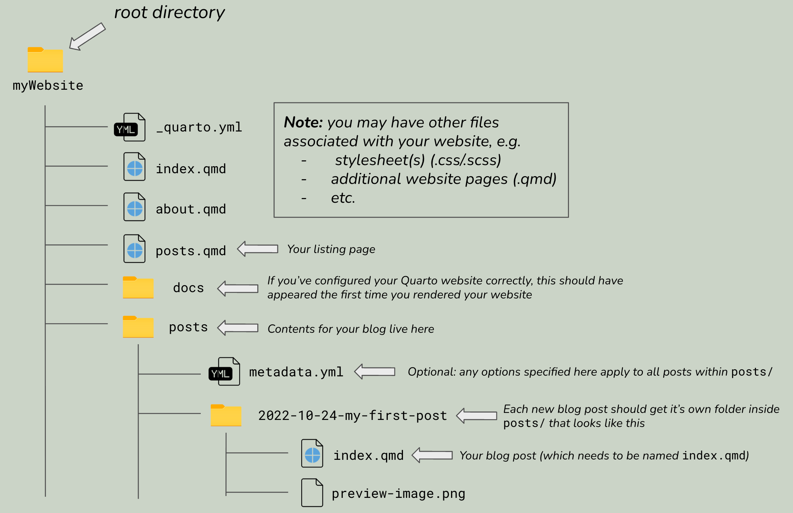
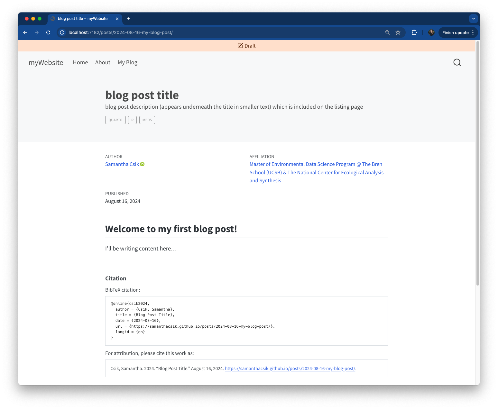
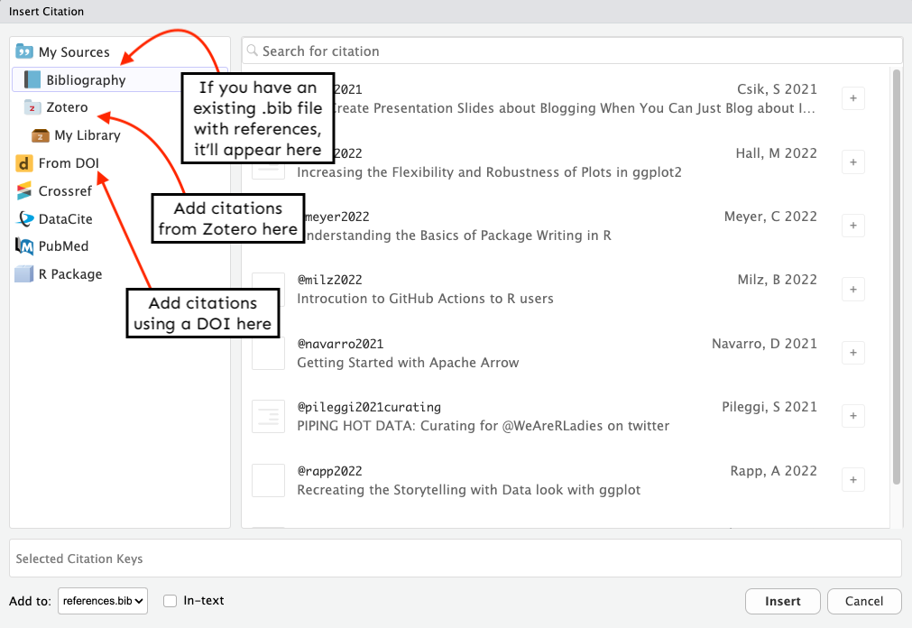

Has a dedicated landing/home page

Adding a Blog to Your Quarto Website
Wednesday, November 4th, 2026
Why should you blog?
Blogging helps you:
build your online profile and portfolio
practice writing and communication skills
network with the data science community
solidify your own learning and understanding
combat imposter syndrome
The 3x rule

Tweet by David Robinson — author of Introduction to Empirical Bayes and former Chief Data Scientist at Heap
Website vs. Blog
Quarto Website

Has a dedicated landing/home page
Quarto Blog

Features a listing page as the landing page
The good news: you can add a blog to your existing Quarto website!
What you need to add a blog
A folder to hold your blog posts
A listing page that displays all blog posts
Actual blog post content
Part I
Setting up your blog’s structure
Step 1: Create a posts/ folder
Create a posts/ folder in your root directory:
Positron:
Hover over your repo name in the Explorer pane > click “New Folder…” > type posts > press Enter
RStudio:
In the Files pane, click “New Folder” > type posts > click OK

Step 2: (Optional) Add _metadata.yml
A _metadata.yml file inside posts/ applies settings to all posts automatically
freeze: auto — only re-renders posts when source files change (great for computationally heavy content)title-block-banner: true — creates a banner-style title block at the top of each postStep 3: Create a listing page
A listing page auto-generates content from your blog posts (titles, dates, categories, preview images)
Create posts.qmd in your root directory with minimal content to start:
Positron: Cmd/Ctrl + Shift + P > “Quarto: New Document” > save as posts.qmd in root directory
RStudio: File > New File > Quarto Document… > save as posts.qmd
Step 4: Configure your listing page
Add a listing field to your posts.qmd YAML:
posts.qmd

Three built-in listing page styles

See Quarto docs for a full preview of each listing type
Step 5: Add your listing page to the navbar
Update _quarto.yml to include posts.qmd just like any other page:
Step 6: Preview your site
Run quarto preview in your terminal to see your changes:

Your listing page will be empty until you add your first blog post — that’s expected!
Part II
Creating your first blog post
Step 1: Create a subdirectory inside posts/
Each post gets its own folder inside posts/ using this naming convention:
YYYY-MM-DD-short-post-description

The folder name becomes the URL slug for your post — keep it short and descriptive!
Step 2: Create index.qmd inside your subdirectory
Name your post file index.qmd — this keeps your URLs clean:
With index.qmd ✓
yoursite.com/posts/
2022-10-24-my-post/With my-post.qmd ✗
yoursite.com/posts/
2022-10-24-my-post/
my-post.htmlThe index.qmd approach creates shorter, cleaner URLs that are easier to remember and share
Step 3: Configure your blog post YAML
posts/2022-10-24-my-post/index.qmd
---
title: "My first blog post"
description: "A short description that appears on the listing page"
author:
- name: Your Name
url: https://yoursite.com/
affiliation: Master of Environmental Data Science Program @ The Bren School
affiliation-url: https://ucsb-meds.github.io/
date: 10-24-2022
categories: [Quarto, R, MEDS]
citation:
url: https://yoursite.com/posts/2022-10-24-my-post/
image: preview-image.png
draft: false
---
Here is where your blog post content begins...Key YAML fields
| Field | Purpose |
|---|---|
title & description |
Both appear on your listing page |
author |
Can include name, url, orcid, affiliation |
date |
Post date (format: MM-DD-YYYY) |
categories |
Self-defined tags — enables filtering on listing page |
citation |
Auto-generates a BibTeX citation at the bottom of your post |
image |
Preview image shown on listing page — file must live in the same folder |
draft: true |
Hides from listing page while you work — set to false to publish |
Step 4: Simplify with _metadata.yml
Move repeated author info to _metadata.yml so you only write it once:
Author info is inherited from _metadata.yml — override it in a post’s YAML when co-authoring
Your first post on the listing page

Advanced Features
Footnotes, citations, and more
Adding footnotes
Method 1 — Referenced:
Method 2 — Inline:
All footnotes are automatically collected in a “Footnotes” section at the bottom of your post.
Adding citations
Step 1: Create a references.bib file inside your post folder
Step 2: Add bibliography to your post YAML:
Step 3: Add references in BibTeX format to your .bib file:
Step 4: Cite in your text using [@key]:
The easier way: Visual Editor citations

In Positron or RStudio: open the Visual editor > Insert > Citation — Quarto automatically updates your .bib file. No manual BibTeX formatting required!
You’re not limited to one blog
Repeat Part I (Steps 1–6) to add additional listing pages to your site:
posts.qmd — your main blog
talks_workshops.qmd — talks & workshops
courses.qmd — courses taught
projects.qmd — data projects & capstones
See Sam Shanny-Csik’s GitHub repo for a real-world example of this structure
Additional resources
The ultimate guide to starting a Quarto blog by Albert Rapp — deep dive into customization options
Creating a blog with Quarto in 10 steps by Beatriz Milz — includes adding a comments section
Quarto listing page documentation — full reference for listing page options
Quarto article layout documentation — customize your post’s page layout